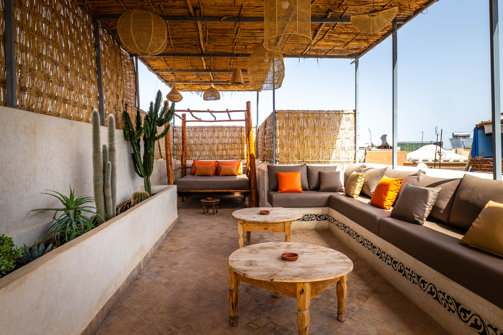
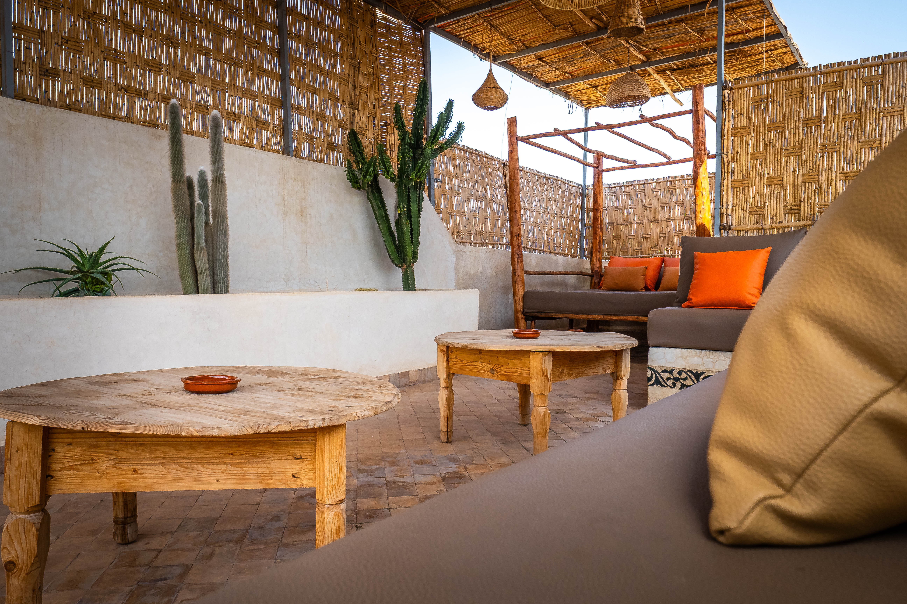
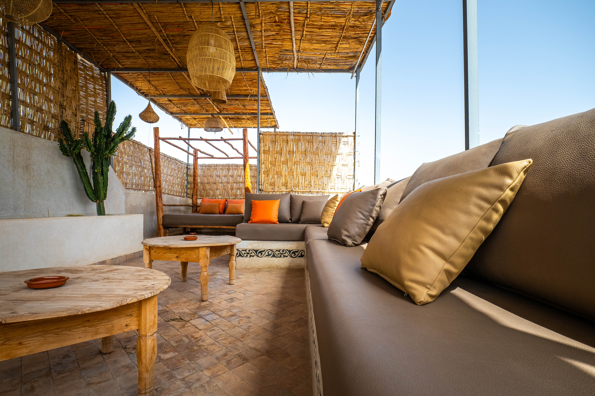
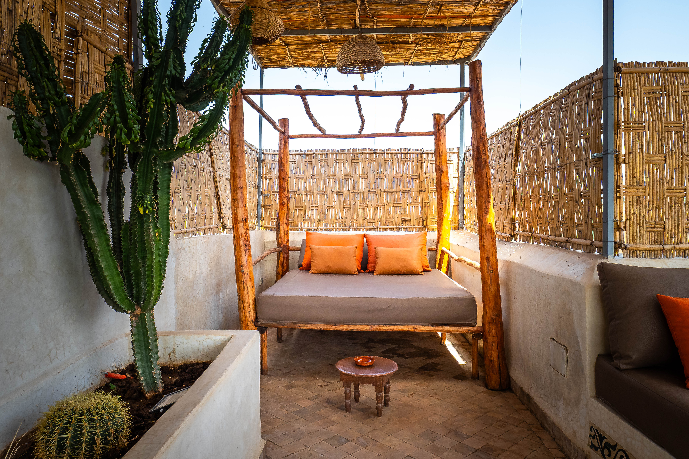
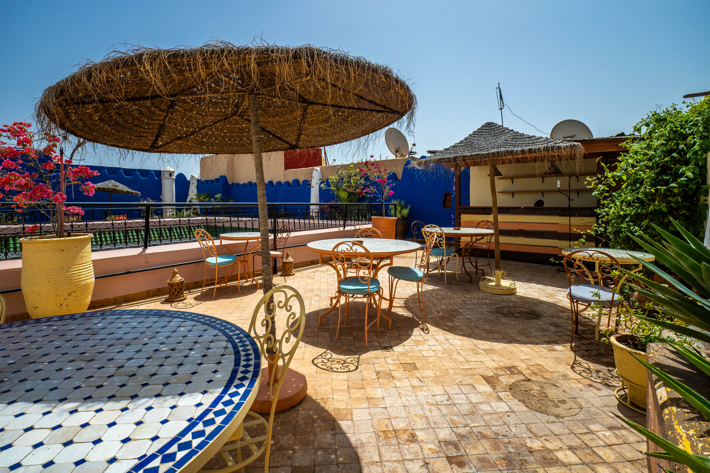
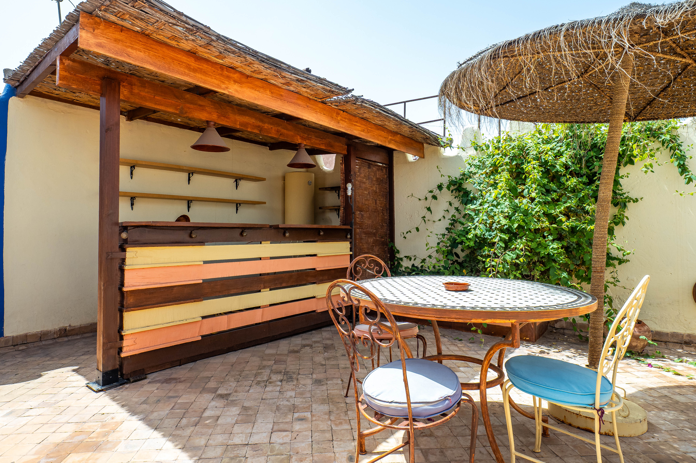
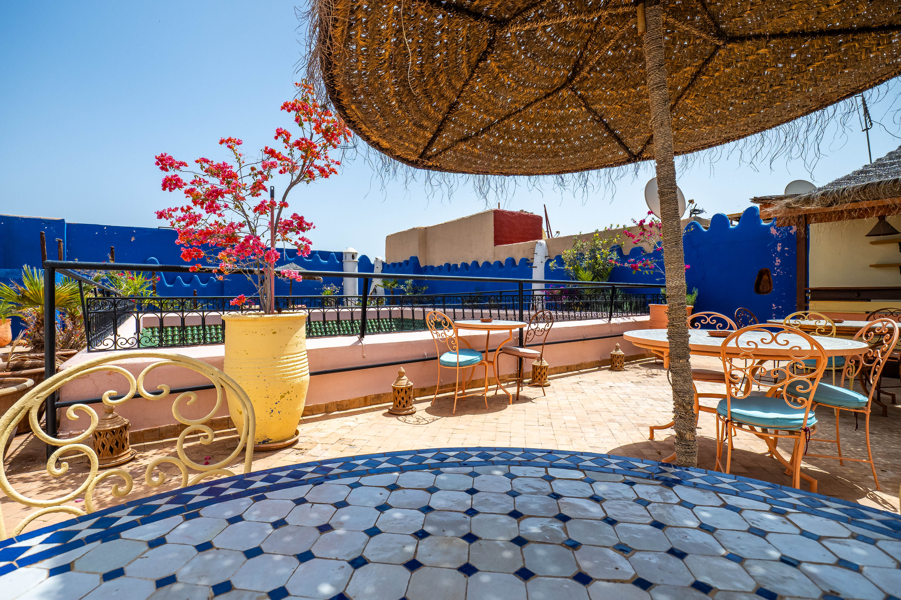

Le Riad KA est l'endroit idéal pour organiser des événements privés sur-mesure (mariage, anniversaire, séminaire). Nous vous offrons un cadre intime, raffiné et authentique, avec une équipe dédiée pour personnaliser chaque aspect de votre événement.
Plongez dans les saveurs du Maroc avec notre atelier de cuisine. Aux côtés de notre chef, apprenez à préparer des plats emblématiques comme le tajine ou le couscous, puis dégustez vos créations sur la terrasse ou dans le patio.


Découvrez Marrakech et ses environs autrement. Que vous souhaitiez explorer les souks animés, admirer les paysages majestueux du désert ou visiter des sites historiques, nous organisons des sorties sur-mesure selon vos envies.
Profitez d’un moment magique sous les étoiles avec notre expérience de cinéma en plein air, dans le patio du riad. Pour les amateurs de sport, nous diffusons les grands événements dans une ambiance conviviale et chaleureuse.


Goûtez à la cuisine marocaine sans quitter le riad. Nous proposons des repas sur demande, cuisinés maison à base de produits frais et locaux. Savourez un dîner typique dans un cadre intimiste, à votre rythme.
Reconnectez-vous à vous-même avec nos séances de yoga, accessibles à tous les niveaux. Dans un espace calme et apaisant, laissez-vous guider par nos instructeurs pour un moment de relaxation profonde.


Nous vous proposons un service de transport depuis et vers l’aéroport de Marrakech. Ponctuel, confortable et privé, nous vous assurons un transport sécurisé pour démarrer ou clore votre expérience en toute sérénité.
Pour explorer la ville et ses alentours en toute liberté, profitez de notre service de location de voiture. Nous vous aidons à choisir le véhicule adapté à votre séjour pour explorer Marrakech et ses environs.
